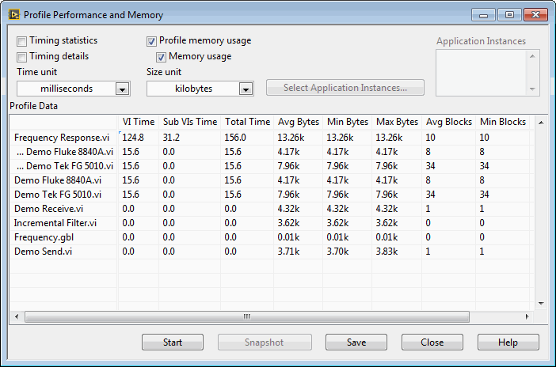

The Profile Performance and Memory window is a powerful tool for determining where your application is spending its time and how it is using memory. The Profile Performance and Memory window has an interactive tabular display of time and memory usage for each VI in your system. Each row of the table contains information for a specific VI. The time spent by each VI is divided into several categories and summarized. The Profile Performance and Memory window calculates the minimum, maximum, and average time spent per run of a VI.
You can use the interactive tabular display to view all or part of this information, sort it by different categories, and look at the performance data of subVIs when called from a specific VI.
Select Tools�Profile�Performance and Memory to display the Profile Performance and Memory window. The following illustration shows an example of the window already in use.

The collection of memory usage information is optional because the collection process can add a significant amount of overhead to the running time of your VIs. You must choose whether to collect this data before starting the Profile Performance and Memory window by checking the Profile memory usage checkbox appropriately. This checkbox cannot be changed once a profiling session is in progress.
You can choose to display only parts of the information in the table. Some basic data is always visible, but you can choose to display the statistics, details, and (if enabled) memory usage by placing or removing checkmarks in the appropriate checkboxes in the Profile Performance and Memory window.
Performance information also is displayed for global VIs. However, this information sometimes requires a slightly different interpretation, as described in the following category-specific sections.
You can view performance data for subVIs by double-clicking the name of the subVI in the tabular display. When you do this, new rows appear directly below the name of the VI and contain performance data for each of its subVIs. When you double-click the name of a global VI, new rows appear for each of the individual controls on its front panel.
You can sort the rows of data in the tabular display by clicking in the desired column header. The current sort column is indicated by a bold header title.
Timings of VIs do not necessarily correspond to the amount of elapsed time that it takes for a VI to complete. This is because a multithreaded execution system can interleave the execution of two or more VIs. Also, there is a certain amount of overhead not attributed to any VI, such as the amount of time taken by a user to respond to a dialog box, or time spent in a Wait (ms) function on a block diagram, or time spent to check for mouse clicks.
When the Timing statistics checkbox contains a checkmark, you can view additional details about the timing of the VI.
When the Timing details checkbox contains a checkmark, you can view a breakdown of several timing categories that sum up the time spent by the VI. For VIs that have a great deal of user interface, these categories can help you determine what operations take the most time.
If you place a checkmark in the Memory usage checkbox, which is only available if you place a checkmark in the Profile memory usage checkbox before you began the profiling session, you can view information about how your VIs are using memory. These values are a measure of the memory used by the data space for the VI and do not include the support data structures necessary for all VIs. The data space for the VI contains not just the data explicitly being used by front panel controls, but also temporary buffers the compiler implicitly created.
The memory sizes are measured at the conclusion of the run of a VI and might not reflect its exact, total usage. For example, if a VI creates large arrays during its run but reduces their size before the VI finishes, the sizes displayed do not reflect the intermediate larger sizes.
This section displays two sets of data�data related to the number of bytes used, and data related to the number of blocks used. A block is a contiguous segment of memory used to store a single piece of data. For example, an array of integers might be multiple bytes in length, but it occupies only one block. The execution system uses independent blocks of memory for arrays, strings, paths, and pictures. Large numbers of blocks in the memory heap of your application can cause an overall degradation of performance (not just execution).